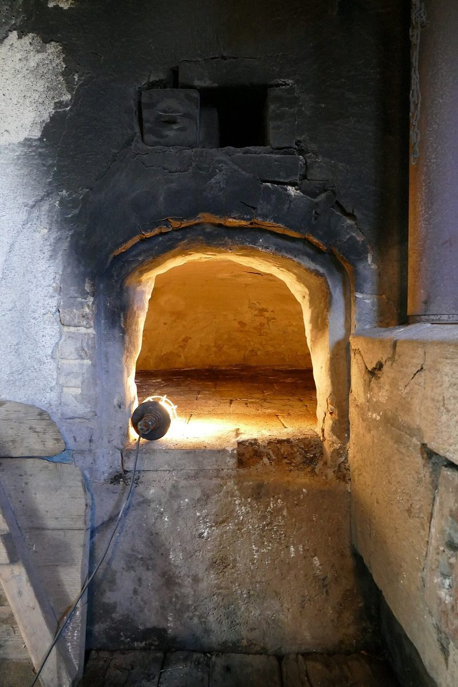

店のこと
02 / 店のこと
お店について確認できているのは、所在地とInstagramのアカウントだけです。
確認できていること
輪の内側
- 店名は「Marco’s BAGELRY」、業種はベーグル店
- 所在地は茨城県笠間市下市毛1425-1(〒309-1626)
- 電話番号はなし。連絡はInstagramから
- 営業時間・定休日・メニュー・価格・ご予約・駐車場は準備中
想像してみる
茹でて、焼く、ふたつの火
この項目は制作側が想像して書いたものです。お店の実際の作り方・考え・メニューとは関係がありません。
ベーグルは一般に、成形した生地を茹でてから焼くパンだと言われています。制作側はそこから、水の熱と窯の熱、ふたつの火を通って形が決まる姿を想像しました。糸が輪をくぐるように、ひとつずつ工程を通っていく。そんな連想です。お店がどう作っているかは分かりません。


土地のこと
茨城県笠間市
お店の所在地は茨城県笠間市下市毛です。笠間市は焼き物の産地としても知られている、とされています(お店との関係は分かりません)。確認できていないことは断定せず、お店からご提供いただいた情報で、このページを書き換えていきます。
写真について
お店のものではありません
